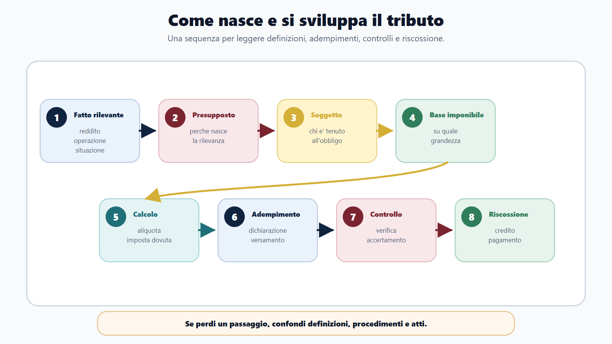
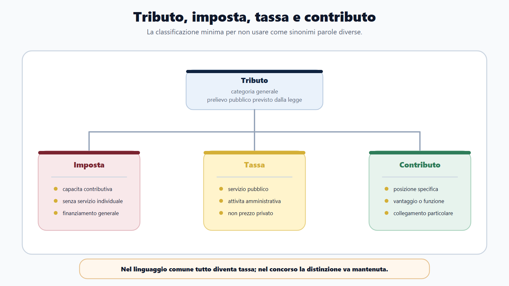
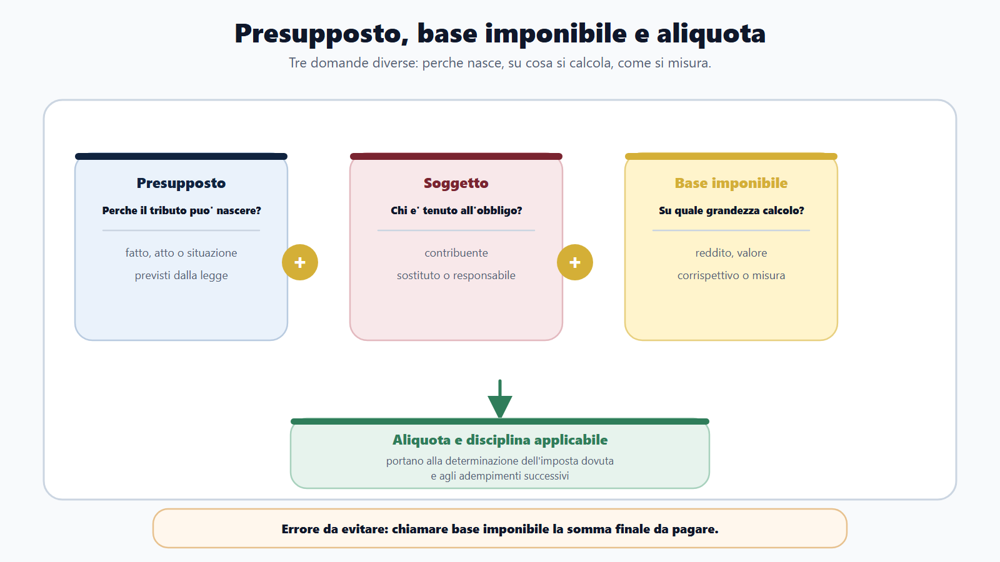
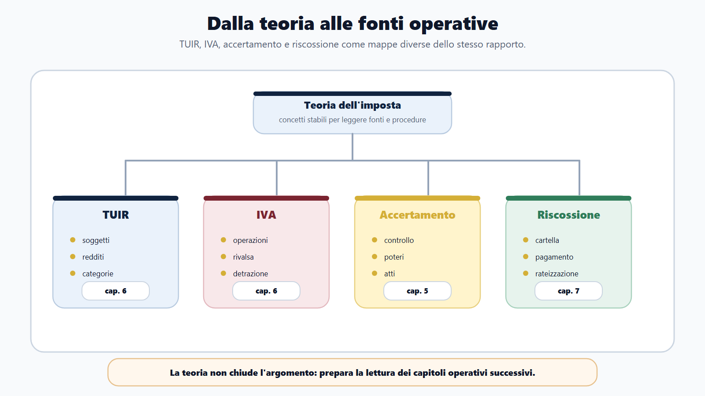

VOL-03 · Capitolo 19
M-FC02
Diritto tributario e teoria dell’imposta
Nel modulo Agenzie fiscali il diritto tributario non è un blocco astratto. È il linguaggio di lavoro dell’amministrazione fiscale. Serve a capire perché nasce un’imposta, chi deve pagarla, su quale base si calcola, quale adempimento è richiesto e come si passa dalla regola al caso. Tributo, imposta, presupposto e riscossione non sono sinonimi: sono passaggi di una sequenza.
01 · Il problema in prova
La grammatica prima delle procedure
Due errori pesano. Il primo è imparare definizioni isolate che non risolvono un quiz. Il secondo è saltare subito a dichiarazioni o cartelle senza aver capito la struttura della pretesa. Il quiz punisce la confusione terminologica; l’orale punisce la risposta disordinata; il caso punisce l’incapacità di collegare norma, fatto e funzione dell’ufficio.
Che cos’è
La teoria dell’imposta è una grammatica: fatto rilevante, presupposto, soggetto passivo, base imponibile, aliquota, imposta dovuta, adempimento, controllo, eventuale accertamento, riscossione.
A che serve in prova
A produrre una risposta orale chiara su come nasce e si sviluppa il rapporto tributario. Ogni definizione deve diventare una frase operativa: non solo che cos’è, ma a che cosa serve in un procedimento fiscale.
02 · BANDO
Cinque decisioni su questo capitolo
Il diritto tributario è vasto. Il bando seleziona ciò che può essere oggetto della prova. Questo capitolo prepara il terreno: non sostituisce accertamento, adempimenti e riscossione.
| Domanda tributaria | Output | |
|---|---|---|
| B — Bando | Il programma chiede teoria, TUIR, IVA, accertamento o riscossione? | Parole fiscali del bando collegate ai capitoli. |
| A — Aree | Teoria, redditi, IVA, adempimenti, controlli, riscossione? | Mappa area/fonte/funzione. |
| N — Nuclei | Quali concetti padroneggiare prima delle procedure? | Schede su tributo, presupposto, soggetto, base. |
| D — Diario | Quali confusioni ricorrono? | Tassa/imposta, base/presupposto, accertamento/riscossione. |
| O — Output | Che risposta devo saper produrre? | Orale da due minuti, tabella concetti, quiz ragionati. |
03 · Sequenza
Come nasce e si sviluppa il tributo
Nei singoli tributi cambiano regole, fonti, dichiarazioni, termini e atti. La logica resta utile: prima si capisce perché la pretesa può nascere, poi si segue il percorso amministrativo. La risposta efficace non è la più lunga. È quella che ordina i passaggi.

Dal fatto rilevante all’eventuale accertamento e alla riscossione: una mappa mentale, non un elenco chiuso.
04 · Costituzione
Legalità, capacità contributiva, progressività
Il prelievo non nasce da una decisione discrezionale dell’ufficio. L’art. 23 Cost. impone la riserva di legge: nessuna prestazione personale o patrimoniale senza base legislativa. L’art. 53 aggiunge il concorso alle spese pubbliche in ragione della capacità contributiva e un sistema complessivamente informato a criteri di progressività.
Riserva di legge
Quale fonte può imporre la prestazione? La primaria definisce gli elementi essenziali; regolamenti e atti operano nello spazio assegnato.
Capacità contributiva
Quale manifestazione economicamente apprezzabile giustifica il concorso alle spese pubbliche?
Progressività
Riguarda il sistema nel suo complesso, non ogni singolo tributo. L’ufficio non crea aliquote.
Affermare che ogni tributo deve essere progressivo. L’art. 53 riferisce la progressività al sistema. Legalità tributaria e legalità amministrativa sono complementari: la prima fonda il prelievo; la seconda governa competenza, procedimento, motivazione e garanzie.
05 · Fonti
Una gerarchia da usare, non da recitare
Costituzione, fonti primarie, diritto dell’Unione europea, regolamenti e provvedimenti, prassi, giurisprudenza. Lo Statuto dei diritti del contribuente (L. 212/2000) raccorda la teoria alle garanzie. Prassi e documenti interpretativi orientano, ma non hanno la stessa forza della legge.
| Passaggio | Domanda |
|---|---|
| Individua la fonte | Costituzione, legge, decreto, fonte UE, regolamento, prassi? |
| Verifica il rango | La regola può imporre il prelievo o solo attuarlo? |
| Collega al tributo o al procedimento | Redditi, IVA, accertamento, riscossione? |
| Distingui norma, atto e prassi | Non trattare una circolare come se fosse la legge. |
L’Unione non ha una competenza fiscale generale. L’unione doganale è competenza esclusiva; il mercato interno è concorrente. L’art. 113 TFUE consente l’armonizzazione delle imposte indirette nella misura necessaria al mercato interno. Regolamento e direttiva non sono sinonimi: il CDU è regolamento; l’IVA armonizzata passa dalla direttiva 2006/112/CE e dal D.P.R. 633/1972.
06 · Categorie
Tributo, imposta, tassa, contributo
«Tributo» è la categoria generale. La denominazione scelta dal legislatore non basta da sola: natura, presupposto e funzione si leggono nella disciplina concreta. Nel linguaggio comune si dice «tasse» per ogni prelievo. In prova questa approssimazione fa perdere punti.
| Categoria | Domanda da farsi |
|---|---|
| Tributo | Prelievo pubblico previsto dalla legge? |
| Imposta | Capacità contributiva senza servizio individuale diretto? |
| Tassa | Collegata a un servizio o a un’attività amministrativa riferibile al soggetto? |
| Contributo | Collegato a una posizione, a un vantaggio o a una funzione specifica? |
Classificazione minima: non usare le quattro parole come sinonimi.

07 · Presupposto
Perché nasce, su che cosa si calcola
Il presupposto è il fatto, l’atto o la situazione al cui verificarsi la legge collega la nascita del tributo. È la porta di ingresso della pretesa. Se non lo individui, conosci il nome dell’imposta ma non stai ragionando giuridicamente. La base imponibile è un’altra domanda: su quale valore o grandezza lo calcolo?

Tre domande diverse: nascita, misura e calcolo. La base non è «la tassa da pagare».
08 · Soggetti
Passivo, attivo, sostituto, responsabile
Il soggetto passivo è il soggetto al quale la legge collega l’obbligo tributario. Non sempre coincide con chi versa, compila o subisce un controllo. Dire solo «chi paga» perde precisione.
Quattro posizioni
Soggetto attivo: ente titolare della pretesa. Soggetto passivo: contribuente o obbligato. Sostituto d’imposta: adempie al posto o per conto di altri nei casi previsti. Responsabile d’imposta: può essere chiamato a rispondere in base a una previsione specifica.
Calcolo
Base imponibile: grandezza su cui si applica il tributo. Aliquota: criterio percentuale o misura. Imposta dovuta: risultato secondo le regole, con deduzioni, detrazioni, crediti, acconti e compensazioni. Non è una semplice moltiplicazione quando la disciplina prevede correttivi.
Rapporto giuridico pubblicistico: il contribuente non contratta liberamente il tributo. Nasce dalla legge al verificarsi del presupposto e si sviluppa attraverso determinazione, adempimento, controllo ed eventuale riscossione.
09 · TUIR
IRPEF e IRES: si parte dal soggetto
Il TUIR, a questo livello, è una mappa, non un elenco da memorizzare articolo per articolo. Classifica, dà lessico, seleziona. Aliquote, scaglioni e importi sono dati mobili: non appartengono al nucleo stabile.
| Domanda | IRPEF | IRES |
|---|---|---|
| Chi è il soggetto? | Persona fisica. Residenza fiscale, non sola cittadinanza. | Società o ente delle categorie dell’art. 73 TUIR. |
| Quale verifica viene prima? | Residenza e fonte del reddito. | Tipo di ente, residenza, natura commerciale. |
| Come si costruisce il reddito? | Qualificazione nelle categorie e aggregazione. | Per le società commerciali residenti, reddito complessivo d’impresa. |
Confondere il denaro ricevuto con il reddito imponibile. L’incasso è un fatto finanziario; il reddito è una grandezza qualificata. Prima: chi è il soggetto, quale fonte, quale categoria, quale criterio di determinazione.
10 · IRPEF
Categorie e sequenza del calcolo
L’art. 6 TUIR ordina sei categorie: fondiari, capitale, lavoro dipendente, lavoro autonomo, impresa, redditi diversi. Si qualifica prima e si calcola dopo. I redditi diversi non sono un contenitore libero: raccolgono fattispecie residuali tipizzate. Un provento immobiliare non è automaticamente reddito fondiario.
Categorie
Redditi determinati con le regole proprie, perdite ed esclusioni comprese.
Reddito complessivo
Aggregazione. Poi oneri deducibili, che riducono il reddito, fino all’imponibile.
Imposta
Imposta lorda sull’imponibile. Le detrazioni riducono l’imposta, non il reddito.
Nel caso paradigmatico della società commerciale residente, il reddito d’impresa muove dal risultato del conto economico e applica variazioni in aumento o in diminuzione. Utile civilistico e reddito fiscale sono collegati, non identici. La meccanica delle variazioni sta nel capitolo sulla contabilità aziendale.
11 · IVA
Meccanismo, non percentuale sul prezzo
L’IVA è un’imposta armonizzata sui consumi: direttiva 2006/112/CE e D.P.R. 633/1972. Applicazione e detrazione fanno gravare il prelievo sul consumo finale. La direttiva non opera come un regolamento: nel caso concreto si raccordano istituto unionale e norma nazionale.
| Nucleo | Che cosa verifica | Errore |
|---|---|---|
| Tre presupposti | Oggettivo (cessione o prestazione), soggettivo (impresa, arte o professione abituale), territoriale. | Ritenere territoriale ogni operazione perché una parte è italiana. |
| Rivalsa e detrazione | Neutralità come meccanismo, non come risultato assoluto. Liquidazione: debito meno detraibile. | Dire che l’IVA è sempre neutrale per chiunque eserciti un’attività. |
| Quattro classi | Imponibile, non imponibile, esente, esclusa o fuori campo. Conseguenze diverse sulla detrazione. | Trattarle come tre modi di dire «IVA non addebitata». |
Soggetto passivo, debitore d’imposta e consumatore finale non sono sinonimi. L’art. 1 del D.P.R. 633/1972 assoggetta le importazioni da chiunque effettuate: non coincidono con la sequenza ordinaria delle operazioni interne. Fatturazione, registrazione, liquidazione e dichiarazione annuale stanno nel capitolo sugli adempimenti.
12 · Due fasi
Accertamento non è riscossione
L’accertamento verifica la corretta applicazione della disciplina e, nei casi previsti, determina o rettifica la pretesa. Lessico: controllo, dichiarazione, potere istruttorio, avviso, motivazione. La riscossione porta il credito a pagamento. Lessico: ruolo, cartella, rateizzazione, sospensione, debitore. La cartella si colloca nella riscossione: non è l’attività di accertamento.

TUIR, IVA, accertamento e riscossione: mappe diverse dello stesso rapporto tributario.
13 · Caso guidato
Marco smette di sottolineare il TUIR
Marco prepara un profilo giuridico-tributario AE. Apre il TUIR in ordine. Dopo pochi giorni ha molte sottolineature e poche idee. Non sa spiegare il rapporto tra presupposto, soggetto passivo e base imponibile. Ricostruisce la sequenza, collega le fonti, scrive tre risposte orali brevi.
| Fonte o area | Uso concorsuale |
|---|---|
| TUIR | Classificare redditi, soggetti, periodo, base e regole di determinazione. |
| IVA | Operazioni, soggetti, documentazione, detrazione, liquidazione. |
| Accertamento | Dichiarazione, controllo, poteri dell’ufficio, atti. |
| Adempimenti | Trasformare il tributo in dichiarazione, versamento e servizio. |
Una persona fisica riceve nello stesso periodo lavoro dipendente, un investimento e una prestazione occasionale. Non si parte dalla somma degli incassi né dall’aliquota. Si qualificano fonte e categoria di ciascun provento, poi si forma il reddito complessivo. La prestazione occasionale non diventa lavoro autonomo abituale per il solo fatto di essere remunerata.
14 · Verifica
Due domande da saper spiegare
Presupposto, soggetto passivo e base imponibile: perché non sono sinonimi?
Il presupposto risponde a «perché il tributo può essere richiesto?». Il soggetto passivo a «chi è tenuto?». La base imponibile a «su quale valore, reddito o misura applico la disciplina?». Sono collegati e distinti. Servono anche per dichiarazione, controllo e accertamento.
Imposta, tassa e contributo sono sinonimi?
No. L’imposta si collega a un presupposto di capacità contributiva senza controprestazione individuale diretta. La tassa a un servizio o a un’attività amministrativa. Il contributo a una posizione, a un vantaggio o a una funzione. Nel linguaggio comune «tasse» copre tutto: in prova no.
15 · Mini-esercizio
Una riga, poi otto righe orali
Compila senza guardare gli appunti. Poi trasforma una riga in risposta orale. Non usare «è una cosa che riguarda le tasse».
| Traccia | Nucleo della risposta |
|---|---|
| Definisci tributo. | Prelievo pubblico previsto dalla legge. |
| Distingui imposta e tassa. | Capacità contributiva vs servizio o attività riferibile al soggetto. |
| Spiega il presupposto. | Fatto o situazione cui la legge collega la nascita del tributo. |
| Spiega la base imponibile. | Grandezza su cui si calcola, non l’imposta dovuta. |
| Perché TUIR e IVA sono mappe diverse? | Reddito, periodo e categorie vs operazioni, rivalsa e detrazione. |
| Distingui accertamento e riscossione. | Formazione o rettifica della pretesa vs pagamento del credito. |
16 · Diario
Studiare dal fondo è l’errore
Il candidato parte da modelli, cartelle o percentuali e non sa spiegare che cosa accade prima. Alla domanda sul presupposto risponde con la base. Alla domanda sul soggetto passivo risponde con l’ufficio. Alla domanda sulla riscossione parla di accertamento.
| Errore | Segnale | Correzione |
|---|---|---|
| Imposta e tassa | Uso «tassa» per tutto. | Un esempio per ciascuna categoria. |
| Presupposto e base | Dico «base imponibile» quando chiedono perché nasce. | Riscrivo fatto → presupposto → base. |
| Soggetto e ufficio | Rispondo con l’Agenzia alla domanda sul passivo. | Attivo, passivo, sostituto, responsabile. |
| IVA come aliquota | Mi fermo alla percentuale. | Operazione, soggetto, detrazione, liquidazione. |
| Accertamento e riscossione | Parlo di cartella come se fosse controllo AE. | Accertamento = pretesa; riscossione = pagamento/carico. |
17 · Da tenere ferme
Cinque regole, con il perché
1. Il tributo è la categoria generale; imposta, tassa e contributo non sono sinonimi.
2. Il presupposto spiega perché il tributo nasce; la base imponibile spiega su che cosa si calcola.
3. Il soggetto passivo è individuato dalla legge e va distinto da soggetto attivo, sostituto e responsabile.
4. TUIR e IVA si leggono come mappe operative: soggetti, categorie, operazioni, adempimenti e controlli.
5. Accertamento e riscossione sono collegati, ma non coincidono.
18 · Quiz
Cinque domande ragionate
| Domanda | Risposta |
|---|---|
| Il presupposto è la somma finale da pagare? | No. È il fatto o la situazione cui la legge collega la nascita del tributo. |
| La base imponibile è la sanzione o la riscossione? | No. È la grandezza sulla quale si applica il tributo. |
| Imposta e tassa coincidono? | No. L’imposta non richiede una controprestazione individuale diretta; la tassa si collega a un servizio o a un’attività amministrativa. |
| Quale sequenza è corretta? | Presupposto → soggetto passivo → base imponibile → calcolo → adempimento. |
| In un profilo AdER, quale distinzione è decisiva? | Accertamento e riscossione. |
L’art. 53 informa a criteri di progressività il sistema tributario nel suo complesso. Non impone che ogni singolo tributo abbia aliquote progressive e non autorizza l’ufficio a creare nuove aliquote.
Prossimo capitolo
Accertamento, controlli e compliance fiscale
La grammatica è ferma. Il capitolo successivo entra nel percorso dell’ufficio: dal dato all’atto, con poteri, garanzie, contraddittorio e gestione del rischio.